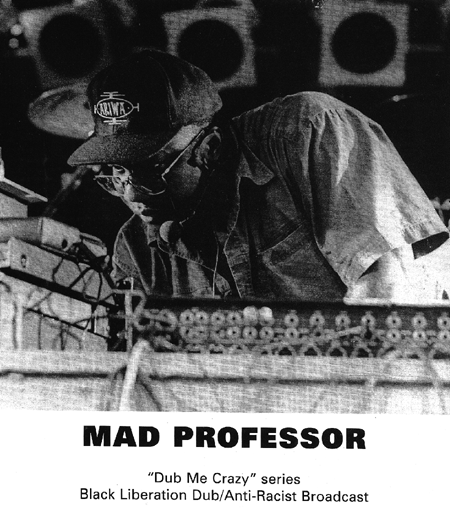

|
Привет, Господа!
Реактивная вибрация конца лета поэхала!

- Слышали про фестиваль искусств
"Неофициальная Москва" (3-5 сентября)? В
рамках этой странной, могучей, таинственной,
доброй, светлой, дрожащей, перпендикулярной и т.д.
формации -
5 сентября 1999 года в Нескучном саду близ
"Ротонды" (Ленинский проспект, 18, корпус 2)
- Грохнет Интернациональный Фестиваль
Позитивных Вибраций Пуш-Пуш Кинг-2. Это, во-первых,
шестичасовая музыкальная встряска на открытом
воздухе. Участвуют Sun Music & Babel, Markscheider Kunst, 2
Самолета, Mono & Исай, Карибасы, а
также беспрецедентно-эксклюзивно-горячее Mad
Professor Dub Show! В качестве специальных гостей -
группа Амударья. Также возможно участие стариков
из Джа Дивижн и двух таллинских даб-ди-джеев
Тарви и Ринго. А в помещении галереи
"Ротонда" - выставка "Параллельная
пресса". А на пространстве перед
"Ротондой" - что-то типа гуманитарной
ярмарки. Во всем этом также частвуют АМД, АРА, Harm
Redaction, ИнфоСпид, FUCK.RU, Страница Живаго Джа и др.
Начитавшись умных книг, Приходи
на Пуш-Пуш Кинг!
Мы, альтернативные редакторы ПГ, дико запарились
организациоными делами. Старые друзья
отворачиваются от нас, называя продавшимися и
старыми, мы превратились в брюзжащих толстячков
ростом 1.5 метра, одеваемся в костюмы, ходим с
мобильными и ездим на 600-м "Запорожце". По
этим причинам давно не меняли информацию на
сайте. Голос ПГ подзамолчал. И это в высшей
степени тупо.
Поэтому сейчас - о наших планах. После пятого
сентября ждите глобального апдэйта. Грядут
изменения в ПГ-Кунст - нам пришло много писем,
кое-что взвесим на сетевых весах! Ожидаются новые
литературные публикации (стихи патриарха
Сапгира, рассказы Фальковского, который пишет
все хуже и хуже, и др.)! Будут рецензии на
понравившиеся нам книги - типа "Моны Лизы
Овердрайв" Гибсона! В ПГ-Футболе - новые
обозрения под редакцией В.Костюкова! В ПГ-Музыке
будем развешивать МП-3-й формат! Давайте слушать
музыку из коллекции ПГ!
Также на подходе - Журнал ПГ 2 - ЗоЛотая Осень -
ссора/дружба (Тема Номера) -
бакидзебабцославендос + wsemirnie posli reggei + гимн
поколения + голос ПГ + дать пизды +
дельфинкаталкинфальковскийчерняк + денисов + dj
mono + д-р йовиш кипурт + золотые яйца кастанеды + ике
фюкейнбяйхи + интернациональный фестиваль
позитивных вибраций Пуш-Пуш КинГ II + карибасы +
кирилл ювелир + книга ПГ + корни русского dub'а + mad
professor dub show in moscow + место силы ПушкинГ + насонов +
общество ТАРТУ + однажды мы все поссоримся +
параллельная пресса/новый "самиздат" +
пелевин-мужчина или где зимуют раки + подпольное
телевидение + посква и метербург: пронзенные
красной стрелой + психоделический rеализм +
совкилошки + спиридонов + sputnik + та'рас ивченко +
удар по почкам или разборки по-русски +
футбол/нарды
Здоровья, Счастья, Удачи!!!
|